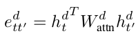

A Deep Reinforced Model for Abstractive Summarization
"What" part of the paper
Trying to overcome the problem of repetitive and incoherent phrases in summaries generated, a novel intra-attention model is proposed that takes into account the encoder states and also the decoder states i.e. summary that has already been generated till prediction sepeartely. A new training method which in addition to the standard supervised word prediction, also combines Reinforcement Learning.
"How" part of the paper
Intra-Temporal on input sequence is something they used to consider attention over encoding hidden states with the current decoding state and previous word.
Attention weight for tth decoding state and ith encoding state is calculated using the following:
f can be any function returning scalar, they used bilinear function. It can also be something as simple as dot product as well.
Attention weights are normalized to penalize the input tokens that have obtained high attention scores in past decoding steps.
Finally the normalized attention scores and context vector are calculated
Decoder can still generated repeated phrases, so for this they try to incorporate the information about previously decoded information using Intra-Decoder Attention. So along with computing encoder context vector with each decoding time step, they also compute decoder context vector. Decoder context vector for first time step is made to be zeros, for t > 1, they use the following steps:
The whole model with encoder and decoder context vector is show below
For Token Generation step, they use token-generation softmax layer or a pointer mechanism to copy rare or unseen words form input sequence. Softmax layer is given as:
Pointer mechanism uses the attention weights as probability distribution to copy input token.
The probabilty of using pointer mechanism is given as:
So after combining all the three equations above for token-generation, we get:
They also introduced some weight sharing between embedding weight matrix and output weight matrix to get some syntactic and semantic information contained in embedding matrix for output token generation, this was done as:
Supervised Learning is to minimize the below equation where y* is the ground truth output sequence.
There can be many possible summaries and therefore minimizing maximum-likelihood estimation may not be the best. They propose a Policy Learning method where they sample the output based on the probability distribution at each decoding step, ys. Also they will have y hat which is the greedy search baseline output. They had a reward function r(y) for output sequence y and groud truth y* with an evaluation metric.
Minimizing above equation is equivalent to maximizing the the conditional likelihood of the sampled sequence ys if it obtains a higher reward than the baseline y hat, thus increasing the reward expectation of our model. Mixing both objectives, we get: